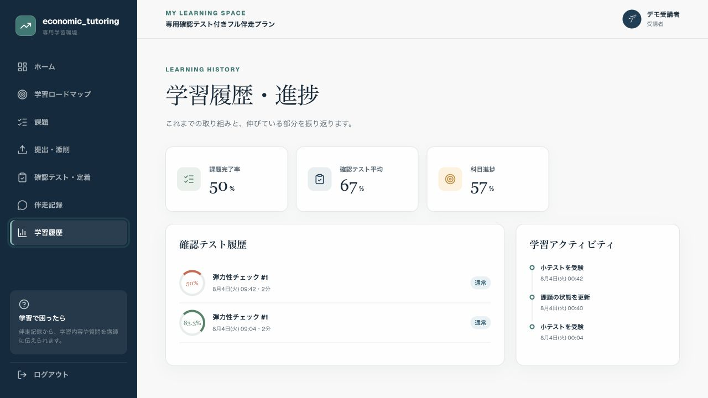

INCLUDED
基本Web学習環境
月額伴走3プランに追加料金なしで含まれます何を、いつまでに進めるかを受講者と担当者で共有するための環境です。
- 科目別ロードマップ
- 今週・今月の課題と期限
- 課題の進行状況
- 次回授業・前回記録
- 科目別進捗・担当者コメント
MY LEARNING SPACE
月額伴走には、課題・期限・進捗を確認する基本Web学習環境が含まれます。専用問題と誤答・定着分析が必要な場合のみ、追加オプションまたはフル伴走を選べます。
INCLUDED
何を、いつまでに進めるかを受講者と担当者で共有するための環境です。
OPTION
担当者が範囲と理解状況に合わせて問題を設定し、誤答と後日の定着まで追います。
WHY REVIEW
授業中に説明を理解できても、時間を空けて自力で解けるとは限りません。確認テストは、授業を置き換えるのではなく、定着の見落としを減らす仕組みです。
しかし、翌日に同じ考え方を使えるかは未確認。
丸付けだけでは、誤答の原因と再発を追いにくい。
早い段階で解けない単元を見つけ、授業へ戻したい。
LEARNING LOOP
機能の数ではなく、学習の一連の流れとして使います。
教材・履歴・授業から対象を決める
現在の範囲と理解状況に合わせる
スマホまたはPCで取り組む
自動採点で間違いを把握する
正答・解説を確認して再挑戦
時間を空けて定着を確かめる
苦手を次の説明・課題へ戻す
ACTUAL SCREENS
公開中の共通基盤を、受講科目・試験日程・教材に合わせて設定します。受講者ごとに別のアプリを新規開発するサービスではありません。



画面内の受講者名・科目・日付・数値は、個人情報を含まない機能説明用の架空データです。
HUMAN + SYSTEM
TWO OPTIONS
伴走中の1科目へ追加するか、最大2科目を含むフル伴走を選びます。単独提供はしていません。
問題数は計算量・記述量・難易度により調整します。専用確認テストは単位取得や成績を保証するものではありません。
FAQ
問題数の多さではなく、現在の授業・教材・苦手単元に合わせて対象を絞り、誤答と後日の定着を授業や計画へ戻す点が異なります。
かかりません。月額伴走3プランに含まれます。伴走を離れてシステムだけを貸し出すサービスではありません。
追加オプションとフル伴走では月4セットまで、通常は1セット5問前後です。計算量・記述量・難易度により調整します。
できません。月4回または月8回の伴走への追加オプション、またはフル伴走で提供します。
受験と履歴確認はスマートフォンでも可能です。数式の途中計算や長い記述は、紙やPCの併用を案内する場合があります。
公開時点で利用できる機能だけを案内します。新機能を受講者ごとに開発する費用は含まれません。